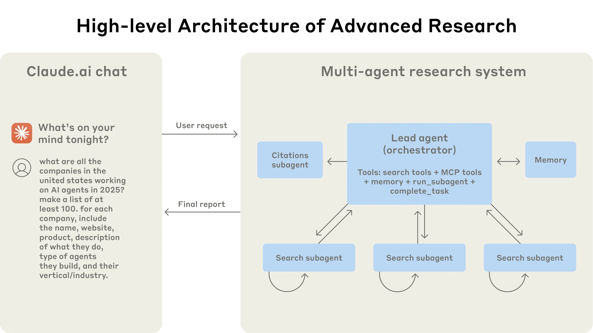
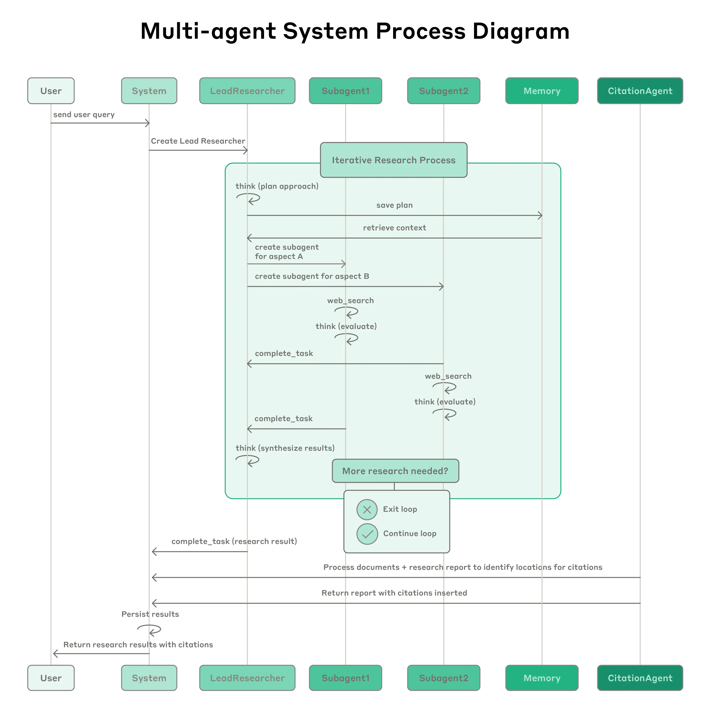
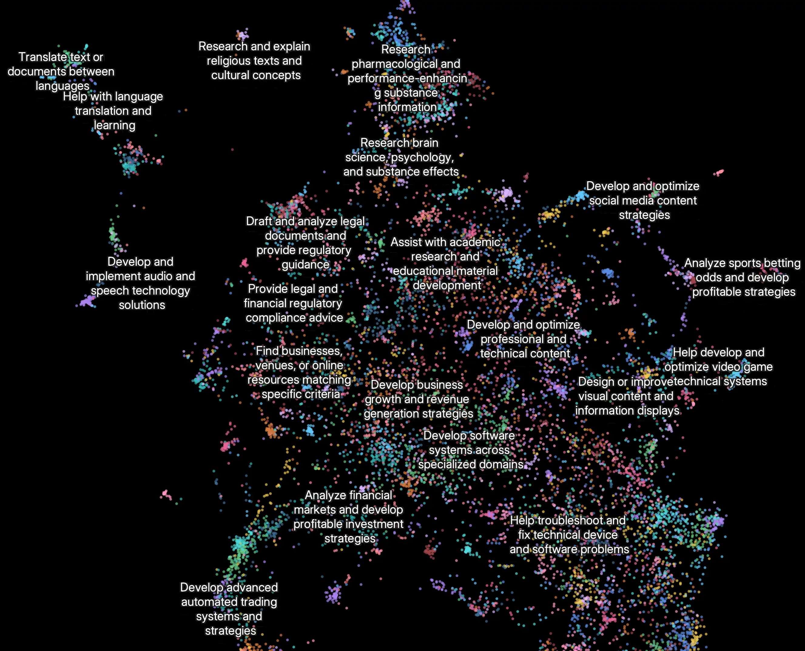

我们如何构建多智能体研究系统
📖 中文摘要
专业术语注解
编排者–工作者架构：由主导智能体分解任务、并行子智能体独立检索再汇总结果的多智能体模式BrowseComp：考察浏览智能体定位难以查找信息能力的基准评测LLM裁判：用大语言模型按评分量表为自由文本产出打分的评估方法交错思考：子智能体拿到工具结果后边思考边评估、据此调整下一次查询的机制彩虹部署：新旧版本并存、逐步把流量切到新版以避免打断运行中智能体的发布方式📄 中文全文
- 类别： 工程（Engineering）
- 来源： https://www.anthropic.com/research/multi-agent-research-system
工程（Engineering） 2025 年 6 月 13 日 发布于 2025 年 6 月 13 日 团队 工程 主题
相关文章 * 工程 2025 年 11 月 4 日 用MCP执行代码：构建更高效的智能体
查看更多 Claude如今具备Research功能，能够跨网页、Google Workspace以及任意集成进行检索，以完成复杂任务。 这套多智能体系统从原型走向生产的过程，让我们在系统架构、工具设计和提示词工程方面得到了关键教训。多智能体系统由多个协同工作的智能体（在循环中自主使用工具的LLM）组成。我们的Research功能包含一个智能体：它根据用户查询规划研究流程，再用工具创建并行智能体，同时检索信息。含有多个智能体的系统，在智能体协调、评估与可靠性方面带来了新的挑战。 本文梳理了对我们行之有效的原则——希望你在构建自己的多智能体系统时，会觉得它们有用。
多智能体系统的优势
研究工作面对的是开放式问题，很难预先预测所需的步骤。你无法为探索复杂主题硬编码一条固定路径，因为这一过程本质上是动态且路径依赖的。人们做研究时，往往会根据发现不断更新方法，顺着调查过程中浮现的线索走下去。 正是这种不可预测性，让AI智能体格外适合研究任务。研究要求随着调查展开而灵活转向、或探索旁支关联。模型必须自主运行许多轮，根据中间发现决定该往哪些方向推进。线性的、一次成型的流水线无法应付这类任务。 检索的本质是压缩：从浩繁语料中提炼洞见。子智能体以各自的上下文窗口并行运作，同时探索问题的不同侧面，再把最重要的token压缩给主导研究智能体，从而促成这种压缩。每个子智能体还带来关注点分离——各自不同的工具、提示词和探索轨迹——这降低了路径依赖，使深入而独立的调查成为可能。 一旦智能跨过某个门槛，多智能体系统就成为扩展性能的重要途径。举例来说，尽管过去10万年里单个人的智力并未变得更高，人类社会在信息时代的能力却_呈指数级_增长，靠的正是我们的_集体_智能与协作能力。即便是具备通用智能的智能体，单打独斗时也有极限；成群的智能体所能完成的要多得多。 我们的内部评估显示，多智能体研究系统尤其擅长广度优先的查询——即需要同时推进多个彼此独立的方向。我们发现，以Claude Opus 4为主导智能体、Claude Sonnet 4为子智能体的多智能体系统，在内部研究评测中比单智能体Claude Opus 4高出90.2%。例如，当被要求找出标普500信息技术板块所有公司的董事会成员时，多智能体系统把任务拆解给子智能体，找到了正确答案；而单智能体系统则因缓慢的顺序检索未能找到答案。 多智能体系统之所以奏效，主要是因为它有助于投入足够的token来解决问题。在我们的分析中，三个因素解释了BrowseComp评测（考察浏览智能体定位难以查找信息的能力）中95%的性能差异。我们发现，仅token用量一项就解释了80%的差异，另两个解释因素则是工具调用次数与模型选择。这一发现印证了我们那种把工作分散到拥有独立上下文窗口的智能体、以增加并行推理容量的架构。最新的Claude模型在token使用上充当了巨大的效率倍增器——升级到Claude Sonnet 4带来的性能提升，比把Claude Sonnet 3.7的token预算翻倍还要大。对于超出单智能体极限的任务，多智能体架构有效地扩大了token用量。 也有不利的一面：在实践中，这类架构消耗token极快。我们的数据显示，智能体通常比对话交互多用约4×的token，而多智能体系统比对话多用约15×的token。要在经济上划算，多智能体系统需要任务本身的价值高到足以偿付性能提升的成本。此外，某些要求所有智能体共享同一上下文、或智能体之间存在大量依赖的领域，目前并不适合多智能体系统。例如，多数编程任务真正可并行的部分比研究任务少，而LLM智能体也还不擅长实时协调与向其他智能体分派任务。我们发现，多智能体系统擅长的是这样一类高价值任务：涉及大量并行、信息超出单个上下文窗口、并要与众多复杂工具对接。
Research的架构概览
我们的Research系统采用编排者–工作者（orchestrator-worker）模式的多智能体架构：由一个主导智能体协调整个流程，并把任务分派给并行运作的专门子智能体。
 实际运行中的多智能体架构：用户查询流经主导智能体，由它创建专门的子智能体，并行检索不同方面。
当用户提交查询时，主导智能体先分析它、制定策略，再派生子智能体同时探索不同方面。如上图所示，子智能体充当智能过滤器：反复使用检索工具收集信息（此处是2025年的AI智能体公司），然后把公司清单返回给主导智能体，由它汇总成最终答案。
采用检索增强生成（RAG）的传统方法使用静态检索：取回与输入查询最相似的一组文本块，再用这些块生成回答。相比之下，我们的架构采用多步检索：动态地找出相关信息、随新发现调整、并分析结果以形成高质量答案。
实际运行中的多智能体架构：用户查询流经主导智能体，由它创建专门的子智能体，并行检索不同方面。
当用户提交查询时，主导智能体先分析它、制定策略，再派生子智能体同时探索不同方面。如上图所示，子智能体充当智能过滤器：反复使用检索工具收集信息（此处是2025年的AI智能体公司），然后把公司清单返回给主导智能体，由它汇总成最终答案。
采用检索增强生成（RAG）的传统方法使用静态检索：取回与输入查询最相似的一组文本块，再用这些块生成回答。相比之下，我们的架构采用多步检索：动态地找出相关信息、随新发现调整、并分析结果以形成高质量答案。
 展示我们多智能体Research系统完整工作流的流程图。当用户提交查询时，系统创建一个LeadResearcher智能体，进入迭代式研究流程。LeadResearcher先通盘思考方法，并把计划存入Memory以持久化上下文——因为一旦上下文窗口超过200,000个token就会被截断，保留计划很重要。随后它创建带有具体研究任务的专门Subagent（图中画了两个，但数量可以任意）。每个Subagent独立执行网页检索，用交错思考评估工具结果，并把发现返回给LeadResearcher。LeadResearcher综合这些结果，判断是否需要进一步研究——若需要，它可以再创建子智能体或调整策略。一旦收集到足够信息，系统便退出研究循环，把所有发现交给CitationAgent；后者处理文档与研究报告，确定引用的具体位置，以确保所有论断都正确归属到来源。最终带有完整引用的研究结果随后返回给用户。
展示我们多智能体Research系统完整工作流的流程图。当用户提交查询时，系统创建一个LeadResearcher智能体，进入迭代式研究流程。LeadResearcher先通盘思考方法，并把计划存入Memory以持久化上下文——因为一旦上下文窗口超过200,000个token就会被截断，保留计划很重要。随后它创建带有具体研究任务的专门Subagent（图中画了两个，但数量可以任意）。每个Subagent独立执行网页检索，用交错思考评估工具结果，并把发现返回给LeadResearcher。LeadResearcher综合这些结果，判断是否需要进一步研究——若需要，它可以再创建子智能体或调整策略。一旦收集到足够信息，系统便退出研究循环，把所有发现交给CitationAgent；后者处理文档与研究报告，确定引用的具体位置，以确保所有论断都正确归属到来源。最终带有完整引用的研究结果随后返回给用户。
研究智能体的提示词工程与评估
多智能体系统与单智能体系统有若干关键差异，其中之一是协调复杂度迅速上升。早期的智能体犯过这样的错：为简单查询派生50个子智能体、无休止地在网上搜刮并不存在的来源、用过多的更新互相干扰。既然每个智能体都由提示词驱动，提示词工程便成了我们改进这些行为的主要抓手。以下是我们总结的一些智能体提示原则： 1. 像你的智能体一样思考。要迭代提示词，就得理解它们的效果。为此，我们用Console搭建了仿真，配上系统中完全相同的提示词与工具，再一步步观察智能体工作。这立刻暴露出一些失效模式：智能体在结果已经够用时还继续搜、使用过于冗长的检索词、或选错工具。有效的提示依赖于对智能体建立准确的心智模型，而这能让最有影响力的改动变得显而易见。 2. 教会编排者如何分派。在我们的系统里，主导智能体把查询拆解成子任务，并描述给子智能体。每个子智能体都需要一个目标、一种输出格式、关于使用哪些工具与来源的指引，以及清晰的任务边界。没有细致的任务描述，智能体就会重复劳动、留下空白，或找不到必要信息。起初我们允许主导智能体给出简单、简短的指令，比如"调研芯片短缺"，但发现这类指令往往含糊到让子智能体误解任务，或与其他智能体执行一模一样的检索。例如，一个子智能体去探究2021年的汽车芯片危机，而另2个则重复劳动、调查当下2025年的供应链，没有形成有效的分工。 3. 让投入与查询复杂度相称。智能体难以判断不同任务该付出多少努力，于是我们在提示词里内置了伸缩规则。简单的事实查找只需1个智能体、3-10次工具调用；直接比较可能需要2-4个子智能体、各10-15次调用；复杂研究则可能动用10个以上职责划分清晰的子智能体。这些明确的指引帮助主导智能体高效分配资源，也避免在简单查询上过度投入——那是我们早期版本常见的失效模式。 4. 工具的设计与选择至关重要。智能体与工具之间的接口，和人机接口同样关键。用对工具才有效率——往往还是硬性必需。举例来说，让智能体去网上检索只存在于Slack里的上下文，从一开始就没戏。有了让模型能访问外部工具的MCP服务器，这个问题会叠加放大：智能体会遇到没见过的工具，其描述质量又良莠不齐。我们给智能体明确的启发式规则：例如先查看所有可用工具、让工具使用匹配用户意图、做宽泛的外部探索时用网页检索、或优先选专用工具而非通用工具。糟糕的工具描述会把智能体引向完全错误的路径，因此每个工具都需要独到的用途和清晰的描述。 5. 让智能体自我改进。我们发现Claude 4系列模型可以成为出色的提示词工程师。给它一个提示词和一种失效模式，它就能诊断智能体为何失败并提出改进。我们甚至造了一个工具测试智能体——给它一个有缺陷的MCP工具，它会尝试使用该工具，然后重写工具描述以避免失败。通过对工具数十次的测试，这个智能体找出了关键的细微之处和缺陷。这套改进工具易用性的流程，让日后使用新描述的智能体任务完成时间缩短了40%，因为它们得以避开大多数错误。 6. 先宽后窄。检索策略应映照专家做研究的方式：先摸清全貌，再钻进细节。智能体往往默认使用过长、过具体的查询，结果寥寥。我们通过提示让智能体从简短宽泛的查询起步、评估可获取的内容、再逐步收窄焦点，以此抵消这种倾向。 7. 引导思考过程。扩展思考模式让Claude在可见的思考过程中输出额外token，可充当一块可控的草稿板。主导智能体用思考来规划方法：评估哪些工具适合任务、判定查询复杂度与子智能体数量、并界定每个子智能体的角色。我们的测试表明，扩展思考改善了指令遵循、推理与效率。子智能体同样先规划，再在拿到工具结果后用交错思考评估质量、找出缺口、并优化下一次查询。这让子智能体能更有效地适应任何任务。 8. 并行工具调用改变速度与性能。复杂的研究任务天然要探查许多来源。我们早期的智能体顺序执行检索，慢得令人难受。为提速，我们引入两种并行化：(1)主导智能体并行拉起3-5个子智能体，而非串行；(2)子智能体并行使用3个以上工具。这些改动把复杂查询的研究时间最多缩短了90%，让Research能在几分钟而非几小时内做更多工作，同时覆盖比其他系统更多的信息。
我们的提示词策略重在灌输良好的启发式，而非死板规则。我们研究了熟练的人如何处理研究任务，并把这些策略编码进提示词——比如把难题拆成更小的任务、仔细评估来源质量、根据新信息调整检索方式、以及判断何时该重深度（深入探究一个主题）、何时该重广度（并行探索多个主题）。我们还通过设置明确的护栏，主动缓解意外副作用，防止智能体失控打转。最后，我们专注于以可观测性和测试用例支撑的快速迭代闭环。
有效评估智能体
好的评估对构建可靠的AI应用不可或缺，智能体也不例外。然而，评估多智能体系统带来独有的挑战。传统评估常假定AI每次都走相同的步骤：给定输入X，系统应沿路径Y产生产出Z。但多智能体系统并非如此运作。即便起点完全相同，智能体也可能走出截然不同却都有效的路径抵达目标。一个智能体可能查三个来源，另一个查十个；也可能用不同工具找到同一个答案。由于我们并不总知道正确的步骤是什么，通常无法只检查智能体是否走完了我们预先规定的"正确"步骤。取而代之，我们需要灵活的评估方法：既判断智能体是否达成了正确结果，也判断它是否遵循了合理的过程。 立即用小样本开始评估。智能体开发早期，改动往往影响巨大，因为遍地都是唾手可得的果实。一次提示微调就可能把成功率从30%抬到80%。效应量这么大，几个测试用例就能看出变化。我们从约20条代表真实使用模式的查询起步。反复测这些查询，常能让我们清楚看到改动的影响。我们常听说AI开发团队迟迟不做评估，因为他们觉得只有包含数百个测试用例的大型评估才有用。然而，最好立刻用少量例子做小规模测试，而不是拖到能搭出更完备的评估才动手。 用LLM当裁判的评估，做好了就能规模化。研究产出是自由格式文本，很少只有一个正确答案，因此难以用程序化方式评估。LLM天然适合给产出打分。我们用一个LLM裁判，按评分量表中的标准逐项评估每份产出：事实准确性（论断与来源是否吻合？）、引用准确性（所引来源与论断是否对应？）、完整性（要求覆盖的各方面是否都涵盖？）、来源质量（是否用了原始来源而非质量较低的二手来源？）、以及工具效率（是否在合理次数内用对了工具？）。我们试过用多个裁判分别评估每个维度，但发现"单次LLM调用、单个提示词、输出0.0-1.0的分数与通过/不通过等级"最为一致，也最贴近人类判断。当评估测试用例_确实_有明确答案时，这套方法尤其有效——我们可以直接让LLM裁判检查答案是否正确（例如：它是否准确列出了研发投入预算最高的前3家制药公司？）。用LLM当裁判，让我们得以规模化地评估数百份产出。 人工评估能抓住自动化漏掉的东西。测试智能体的人会找出评估遗漏的边界情况，包括对异常查询给出幻觉答案、系统故障、或微妙的来源选择偏差。就我们而言，人工测试者注意到，早期智能体总是一致地选择SEO优化过的内容农场，而非学术PDF或个人博客这类权威却排名较低的来源。在提示词里加入来源质量的启发式规则，帮助解决了这个问题。即便在自动化评估盛行的世界里，人工测试依然不可或缺。 多智能体系统会出现涌现行为，它们并非出自专门的编程。例如，对主导智能体的细小改动，可能以无法预料的方式改变子智能体的行为。要成功，就得理解互动模式，而不只是单个智能体的行为。因此，给这类智能体最好的提示，不该只是严格的指令，而应是界定分工、解题方式与投入预算的协作框架。把它做对，依赖于细致的提示词与工具设计、扎实的启发式、可观测性，以及紧密的反馈闭环。****参见我们Cookbook中的开源提示词，获取本系统的示例提示词。
生产环境的可靠性与工程挑战
在传统软件里，一个bug可能弄坏某项功能、拉低性能或造成宕机。而在智能体系统中，细微改动会级联成巨大的行为变化，这让为必须在长时运行中维持状态的复杂智能体编写代码变得异常困难。 智能体有状态，错误会累积。智能体可以长时间运行，在多次工具调用之间维持状态。这意味着我们需要持久化地执行代码，并沿途处理错误。没有有效的缓解措施，轻微的系统故障对智能体也可能是灾难性的。错误发生时，我们不能干脆从头重启：重启代价高昂，也让用户沮丧。取而代之，我们构建了能从智能体出错时所处位置恢复的系统。我们还借模型的智能来优雅地处理问题：例如，让智能体知道某个工具正在失效、并允许它自行调整，效果好得出奇。我们把基于Claude构建的AI智能体的适应力，与重试逻辑、定期检查点这类确定性保障结合起来。 调试得益于新方法。智能体做动态决策，即便提示词相同，各次运行之间也不确定，这让调试更难。例如，用户会反馈智能体"找不到显而易见的信息"，我们却看不出原因：是智能体用了糟糕的检索词？选了差劲的来源？还是撞上工具故障？加入完整的生产链路追踪后，我们得以诊断智能体为何失败，并有系统地修复问题。在标准可观测性之外，我们还监控智能体的决策模式与互动结构——而完全不监控单条对话的内容，以维护用户隐私。这种高层可观测性帮助我们诊断根因、发现意料之外的行为、并修复常见故障。 部署需要细致协调。智能体系统是由提示词、工具与执行逻辑织成的高度有状态之网，几乎持续不断地运行。这意味着每次部署更新时，智能体可能正处在其流程的任意位置。因此，我们必须防止出于好意的改动弄坏正在运行的智能体。我们无法让所有智能体同时升级到新版本，于是采用彩虹部署来避免打扰运行中的智能体：让新旧版本同时运行，把流量从旧版逐步切到新版。 同步执行造成瓶颈。目前，我们的主导智能体同步执行子智能体，要等每一批子智能体完成才继续。这简化了协调，却在智能体之间的信息流上造成瓶颈。例如，主导智能体无法引导子智能体，子智能体之间无法协同，整个系统还可能因等待某一个子智能体搜完而阻塞。异步执行能带来额外的并行度：智能体并发工作，并在需要时创建新子智能体。但这种异步性又会在结果协调、状态一致性以及跨子智能体的错误传播方面增添挑战。随着模型能处理更长、更复杂的研究任务，我们预计性能收益将证明这份复杂度是值得的。
结论
构建AI智能体时，最后一公里往往占了全程的大半。在开发者机器上跑得通的代码库，要变成可靠的生产系统需要大量工程投入。智能体系统中错误的复合性质意味着，对传统软件而言的小问题，也可能让智能体彻底脱轨。一步失败，就可能使智能体走上完全不同的轨迹，导致无法预料的结果。出于本文所述的种种原因，原型与生产之间的鸿沟往往比预想的更宽。
尽管有这些挑战，多智能体系统已被证明对开放式研究任务很有价值。用户说，Claude帮他们发现了未曾考虑过的商业机会、理清了复杂的医疗选择、解决了棘手的技术bug，并通过揭示单靠自己找不到的研究关联，省下多达数天的工作。只要有细致的工程、全面的测试、注重细节的提示词与工具设计、稳健的运维实践，以及对当前智能体能力有深刻理解的研究、产品与工程团队之间紧密协作，多智能体研究系统就能可靠地规模化运行。我们已经看到这些系统正在改变人们解决复杂问题的方式。
 一张Clio嵌入图，展示人们如今使用Research功能最常见的方式。占比最高的用例类别依次是：跨专业领域开发软件系统（10%）、开发并优化专业与技术内容（8%）、制定业务增长与营收策略（8%）、辅助学术研究与教学材料开发（7%），以及调研并核实关于人物、地点或组织的信息（5%）。
一张Clio嵌入图，展示人们如今使用Research功能最常见的方式。占比最高的用例类别依次是：跨专业领域开发软件系统（10%）、开发并优化专业与技术内容（8%）、制定业务增长与营收策略（8%）、辅助学术研究与教学材料开发（7%），以及调研并核实关于人物、地点或组织的信息（5%）。
附录
以下是关于多智能体系统的另一些杂项建议。 对跨多轮改动状态的智能体做终态评估。评估在跨多轮对话中修改持久状态的智能体，会带来独有挑战。与只读的研究任务不同，每一步动作都可能改变后续步骤所处的环境，形成传统评估方法难以处理的依赖。我们发现，聚焦终态评估而非逐轮分析更为奏效：不去评判智能体是否走了某个特定流程，而是评估它是否达成了正确的最终状态。这种做法承认智能体可能找到通往同一目标的替代路径，同时仍确保它交付预期结果。对复杂工作流，可把评估拆成一个个离散检查点——在这些点上本应发生特定的状态变化——而不必试图验证每一个中间步骤。 长周期对话管理。生产环境中的智能体常要进行跨越数百轮的对话，需要细致的上下文管理策略。随着对话拉长，标准上下文窗口变得不够用，就必须有智能的压缩与记忆机制。我们实现了这样一些模式：智能体先总结已完成的工作阶段、把关键信息存入外部记忆，再转入新任务。当上下文额度将尽时，智能体可以派生出上下文干净的新子智能体，并通过细致交接维持连贯。此外，它们能从记忆中取回诸如研究计划之类的已存上下文，而不至于在触达上下文上限时丢掉此前的成果。这种分布式做法既防止上下文溢出，又在长时互动中保住了对话的连贯性。 让子智能体把产出写入文件系统，以减少"传话游戏"。对某些类型的结果，子智能体的直接产出可以绕开主协调者，从而同时提升保真度与性能。与其要求子智能体把一切都经主导智能体转达，不如实现产物系统：让专门的智能体创建能独立持久保存的产出。子智能体调用工具把成果存进外部系统，再把轻量引用传回协调者。这既避免多阶段处理中的信息丢失，也减少把大段产出复制进对话历史所带来的token开销。对于代码、报告或数据可视化这类结构化产出，这一模式尤其奏效——子智能体专门的提示词产出的效果，胜过经由通用协调者过滤。
想了解更多？
作者与致谢
贡献者
由Jeremy Hadfield、Barry Zhang、Kenneth Lien、Florian Scholz、Jeremy Fox和Daniel Ford撰写。
致谢
这项工作凝聚了Anthropic多个团队的集体努力，正是他们让Research功能得以实现。特别感谢Anthropic应用工程团队，是他们的投入把这套复杂的多智能体系统带入了生产环境。我们也感谢早期用户给出的宝贵反馈。
▸ 英文原文（点击展开）
How we built our multi-agent research system
- Date: 2025-06-13
- Source: https://www.anthropic.com/research/multi-agent-research-system
How we built our multi-agent research system
Published Jun 13, 2025 Team Engineering Topics
Related articles * Engineering Nov 4, 2025 Code execution with MCP: Building more efficient agents
View more Claude now has Research capabilities that allow it to search across the web, Google Workspace, and any integrations to accomplish complex tasks. The journey of this multi-agent system from prototype to production taught us critical lessons about system architecture, tool design, and prompt engineering. A multi-agent system consists of multiple agents (LLMs autonomously using tools in a loop) working together. Our Research feature involves an agent that plans a research process based on user queries, and then uses tools to create parallel agents that search for information simultaneously. Systems with multiple agents introduce new challenges in agent coordination, evaluation, and reliability. This post breaks down the principles that worked for us—we hope you'll find them useful to apply when building your own multi-agent systems.
Benefits of a multi-agent system
Research work involves open-ended problems where it’s very difficult to predict the required steps in advance. You can’t hardcode a fixed path for exploring complex topics, as the process is inherently dynamic and path-dependent. When people conduct research, they tend to continuously update their approach based on discoveries, following leads that emerge during investigation. This unpredictability makes AI agents particularly well-suited for research tasks. Research demands the flexibility to pivot or explore tangential connections as the investigation unfolds. The model must operate autonomously for many turns, making decisions about which directions to pursue based on intermediate findings. A linear, one-shot pipeline cannot handle these tasks. The essence of search is compression: distilling insights from a vast corpus. Subagents facilitate compression by operating in parallel with their own context windows, exploring different aspects of the question simultaneously before condensing the most important tokens for the lead research agent. Each subagent also provides separation of concerns—distinct tools, prompts, and exploration trajectories—which reduces path dependency and enables thorough, independent investigations. Once intelligence reaches a threshold, multi-agent systems become a vital way to scale performance. For instance, although individual humans have become more intelligent in the last 100,000 years, human societies have become exponentially more capable in the information age because of our collective intelligence and ability to coordinate. Even generally-intelligent agents face limits when operating as individuals; groups of agents can accomplish far more. Our internal evaluations show that multi-agent research systems excel especially for breadth-first queries that involve pursuing multiple independent directions simultaneously. We found that a multi-agent system with Claude Opus 4 as the lead agent and Claude Sonnet 4 subagents outperformed single-agent Claude Opus 4 by 90.2% on our internal research eval. For example, when asked to identify all the board members of the companies in the Information Technology S&P 500, the multi-agent system found the correct answers by decomposing this into tasks for subagents, while the single agent system failed to find the answer with slow, sequential searches. Multi-agent systems work mainly because they help spend enough tokens to solve the problem. In our analysis, three factors explained 95% of the performance variance in the BrowseComp evaluation (which tests the ability of browsing agents to locate hard-to-find information). We found that token usage by itself explains 80% of the variance, with the number of tool calls and the model choice as the two other explanatory factors. This finding validates our architecture that distributes work across agents with separate context windows to add more capacity for parallel reasoning. The latest Claude models act as large efficiency multipliers on token use, as upgrading to Claude Sonnet 4 is a larger performance gain than doubling the token budget on Claude Sonnet 3.7. Multi-agent architectures effectively scale token usage for tasks that exceed the limits of single agents. There is a downside: in practice, these architectures burn through tokens fast. In our data, agents typically use about 4× more tokens than chat interactions, and multi-agent systems use about 15× more tokens than chats. For economic viability, multi-agent systems require tasks where the value of the task is high enough to pay for the increased performance. Further, some domains that require all agents to share the same context or involve many dependencies between agents are not a good fit for multi-agent systems today. For instance, most coding tasks involve fewer truly parallelizable tasks than research, and LLM agents are not yet great at coordinating and delegating to other agents in real time. We’ve found that multi-agent systems excel at valuable tasks that involve heavy parallelization, information that exceeds single context windows, and interfacing with numerous complex tools.
Architecture overview for Research
Our Research system uses a multi-agent architecture with an orchestrator-worker pattern, where a lead agent coordinates the process while delegating to specialized subagents that operate in parallel.

The multi-agent architecture in action: user queries flow through a lead agent that creates specialized subagents to search for different aspects in parallel. When a user submits a query, the lead agent analyzes it, develops a strategy, and spawns subagents to explore different aspects simultaneously. As shown in the diagram above, the subagents act as intelligent filters by iteratively using search tools to gather information, in this case on AI agent companies in 2025, and then returning a list of companies to the lead agent so it can compile a final answer. Traditional approaches using Retrieval Augmented Generation (RAG) use static retrieval. That is, they fetch some set of chunks that are most similar to an input query and use these chunks to generate a response. In contrast, our architecture uses a multi-step search that dynamically finds relevant information, adapts to new findings, and analyzes results to formulate high-quality answers.
Process diagram showing the complete workflow of our multi-agent Research system. When a user submits a query, the system creates a LeadResearcher agent that enters an iterative research process. The LeadResearcher begins by thinking through the approach and saving its plan to Memory to persist the context, since if the context window exceeds 200,000 tokens it will be truncated and it is important to retain the plan. It then creates specialized Subagents (two are shown here, but it can be any number) with specific research tasks. Each Subagent independently performs web searches, evaluates tool results using interleaved thinking, and returns findings to the LeadResearcher. The LeadResearcher synthesizes these results and decides whether more research is needed—if so, it can create additional subagents or refine its strategy. Once sufficient information is gathered, the system exits the research loop and passes all findings to a CitationAgent, which processes the documents and research report to identify specific locations for citations. This ensures all claims are properly attributed to their sources. The final research results, complete with citations, are then returned to the user.Prompt engineering and evaluations for research agents
Multi-agent systems have key differences from single-agent systems, including a rapid growth in coordination complexity. Early agents made errors like spawning 50 subagents for simple queries, scouring the web endlessly for nonexistent sources, and distracting each other with excessive updates. Since each agent is steered by a prompt, prompt engineering was our primary lever for improving these behaviors. Below are some principles we learned for prompting agents: 1. Think like your agents. To iterate on prompts, you must understand their effects. To help us do this, we built simulations using our Console with the exact prompts and tools from our system, then watched agents work step-by-step. This immediately revealed failure modes: agents continuing when they already had sufficient results, using overly verbose search queries, or selecting incorrect tools. Effective prompting relies on developing an accurate mental model of the agent, which can make the most impactful changes obvious. 2. Teach the orchestrator how to delegate. In our system, the lead agent decomposes queries into subtasks and describes them to subagents. Each subagent needs an objective, an output format, guidance on the tools and sources to use, and clear task boundaries. Without detailed task descriptions, agents duplicate work, leave gaps, or fail to find necessary information. We started by allowing the lead agent to give simple, short instructions like 'research the semiconductor shortage,' but found these instructions often were vague enough that subagents misinterpreted the task or performed the exact same searches as other agents. For instance, one subagent explored the 2021 automotive chip crisis while 2 others duplicated work investigating current 2025 supply chains, without an effective division of labor. 3. Scale effort to query complexity. Agents struggle to judge appropriate effort for different tasks, so we embedded scaling rules in the prompts. Simple fact-finding requires just 1 agent with 3-10 tool calls, direct comparisons might need 2-4 subagents with 10-15 calls each, and complex research might use more than 10 subagents with clearly divided responsibilities. These explicit guidelines help the lead agent allocate resources efficiently and prevent overinvestment in simple queries, which was a common failure mode in our early versions. 4. Tool design and selection are critical. Agent-tool interfaces are as critical as human-computer interfaces. Using the right tool is efficient—often, it’s strictly necessary. For instance, an agent searching the web for context that only exists in Slack is doomed from the start. With MCP servers that give the model access to external tools, this problem compounds, as agents encounter unseen tools with descriptions of wildly varying quality. We gave our agents explicit heuristics: for example, examine all available tools first, match tool usage to user intent, search the web for broad external exploration, or prefer specialized tools over generic ones. Bad tool descriptions can send agents down completely wrong paths, so each tool needs a distinct purpose and a clear description. 5. Let agents improve themselves. We found that the Claude 4 models can be excellent prompt engineers. When given a prompt and a failure mode, they are able to diagnose why the agent is failing and suggest improvements. We even created a tool-testing agent—when given a flawed MCP tool, it attempts to use the tool and then rewrites the tool description to avoid failures. By testing the tool dozens of times, this agent found key nuances and bugs. This process for improving tool ergonomics resulted in a 40% decrease in task completion time for future agents using the new description, because they were able to avoid most mistakes. 6. Start wide, then narrow down. Search strategy should mirror expert human research: explore the landscape before drilling into specifics. Agents often default to overly long, specific queries that return few results. We counteracted this tendency by prompting agents to start with short, broad queries, evaluate what’s available, then progressively narrow focus. 7. Guide the thinking process. Extended thinking mode, which leads Claude to output additional tokens in a visible thinking process, can serve as a controllable scratchpad. The lead agent uses thinking to plan its approach, assessing which tools fit the task, determining query complexity and subagent count, and defining each subagent’s role. Our testing showed that extended thinking improved instruction-following, reasoning, and efficiency. Subagents also plan, then use interleaved thinking after tool results to evaluate quality, identify gaps, and refine their next query. This makes subagents more effective in adapting to any task. 8. Parallel tool calling transforms speed and performance. Complex research tasks naturally involve exploring many sources. Our early agents executed sequential searches, which was painfully slow. For speed, we introduced two kinds of parallelization: (1) the lead agent spins up 3-5 subagents in parallel rather than serially; (2) the subagents use 3+ tools in parallel. These changes cut research time by up to 90% for complex queries, allowing Research to do more work in minutes instead of hours while covering more information than other systems.
Our prompting strategy focuses on instilling good heuristics rather than rigid rules. We studied how skilled humans approach research tasks and encoded these strategies in our prompts—strategies like decomposing difficult questions into smaller tasks, carefully evaluating the quality of sources, adjusting search approaches based on new information, and recognizing when to focus on depth (investigating one topic in detail) vs. breadth (exploring many topics in parallel). We also proactively mitigated unintended side effects by setting explicit guardrails to prevent the agents from spiraling out of control. Finally, we focused on a fast iteration loop with observability and test cases.
Effective evaluation of agents
Good evaluations are essential for building reliable AI applications, and agents are no different. However, evaluating multi-agent systems presents unique challenges. Traditional evaluations often assume that the AI follows the same steps each time: given input X, the system should follow path Y to produce output Z. But multi-agent systems don't work this way. Even with identical starting points, agents might take completely different valid paths to reach their goal. One agent might search three sources while another searches ten, or they might use different tools to find the same answer. Because we don’t always know what the right steps are, we usually can't just check if agents followed the “correct” steps we prescribed in advance. Instead, we need flexible evaluation methods that judge whether agents achieved the right outcomes while also following a reasonable process. Start evaluating immediately with small samples. In early agent development, changes tend to have dramatic impacts because there is abundant low-hanging fruit. A prompt tweak might boost success rates from 30% to 80%. With effect sizes this large, you can spot changes with just a few test cases. We started with a set of about 20 queries representing real usage patterns. Testing these queries often allowed us to clearly see the impact of changes. We often hear that AI developer teams delay creating evals because they believe that only large evals with hundreds of test cases are useful. However, it’s best to start with small-scale testing right away with a few examples, rather than delaying until you can build more thorough evals. LLM-as-judge evaluation scales when done well. Research outputs are difficult to evaluate programmatically, since they are free-form text and rarely have a single correct answer. LLMs are a natural fit for grading outputs. We used an LLM judge that evaluated each output against criteria in a rubric: factual accuracy (do claims match sources?), citation accuracy (do the cited sources match the claims?), completeness (are all requested aspects covered?), source quality (did it use primary sources over lower-quality secondary sources?), and tool efficiency (did it use the right tools a reasonable number of times?). We experimented with multiple judges to evaluate each component, but found that a single LLM call with a single prompt outputting scores from 0.0-1.0 and a pass-fail grade was the most consistent and aligned with human judgements. This method was especially effective when the eval test cases did have a clear answer, and we could use the LLM judge to simply check if the answer was correct (i.e. did it accurately list the pharma companies with the top 3 largest R&D budgets?). Using an LLM as a judge allowed us to scalably evaluate hundreds of outputs. Human evaluation catches what automation misses. People testing agents find edge cases that evals miss. These include hallucinated answers on unusual queries, system failures, or subtle source selection biases. In our case, human testers noticed that our early agents consistently chose SEO-optimized content farms over authoritative but less highly-ranked sources like academic PDFs or personal blogs. Adding source quality heuristics to our prompts helped resolve this issue. Even in a world of automated evaluations, manual testing remains essential. Multi-agent systems have emergent behaviors, which arise without specific programming. For instance, small changes to the lead agent can unpredictably change how subagents behave. Success requires understanding interaction patterns, not just individual agent behavior. Therefore, the best prompts for these agents are not just strict instructions, but frameworks for collaboration that define the division of labor, problem-solving approaches, and effort budgets. Getting this right relies on careful prompting and tool design, solid heuristics, observability, and tight feedback loops.**** See the open-source prompts in our Cookbook for example prompts from our system.
Production reliability and engineering challenges
In traditional software, a bug might break a feature, degrade performance, or cause outages. In agentic systems, minor changes cascade into large behavioral changes, which makes it remarkably difficult to write code for complex agents that must maintain state in a long-running process. Agents are stateful and errors compound. Agents can run for long periods of time, maintaining state across many tool calls. This means we need to durably execute code and handle errors along the way. Without effective mitigations, minor system failures can be catastrophic for agents. When errors occur, we can't just restart from the beginning: restarts are expensive and frustrating for users. Instead, we built systems that can resume from where the agent was when the errors occurred. We also use the model’s intelligence to handle issues gracefully: for instance, letting the agent know when a tool is failing and letting it adapt works surprisingly well. We combine the adaptability of AI agents built on Claude with deterministic safeguards like retry logic and regular checkpoints. Debugging benefits from new approaches. Agents make dynamic decisions and are non-deterministic between runs, even with identical prompts. This makes debugging harder. For instance, users would report agents “not finding obvious information,” but we couldn't see why. Were the agents using bad search queries? Choosing poor sources? Hitting tool failures? Adding full production tracing let us diagnose why agents failed and fix issues systematically. Beyond standard observability, we monitor agent decision patterns and interaction structures—all without monitoring the contents of individual conversations, to maintain user privacy. This high-level observability helped us diagnose root causes, discover unexpected behaviors, and fix common failures. Deployment needs careful coordination. Agent systems are highly stateful webs of prompts, tools, and execution logic that run almost continuously. This means that whenever we deploy updates, agents might be anywhere in their process. We therefore need to prevent our well-meaning code changes from breaking existing agents. We can’t update every agent to the new version at the same time. Instead, we use rainbow deployments to avoid disrupting running agents, by gradually shifting traffic from old to new versions while keeping both running simultaneously. Synchronous execution creates bottlenecks. Currently, our lead agents execute subagents synchronously, waiting for each set of subagents to complete before proceeding. This simplifies coordination, but creates bottlenecks in the information flow between agents. For instance, the lead agent can’t steer subagents, subagents can’t coordinate, and the entire system can be blocked while waiting for a single subagent to finish searching. Asynchronous execution would enable additional parallelism: agents working concurrently and creating new subagents when needed. But this asynchronicity adds challenges in result coordination, state consistency, and error propagation across the subagents. As models can handle longer and more complex research tasks, we expect the performance gains will justify the complexity.
Conclusion
When building AI agents, the last mile often becomes most of the journey. Codebases that work on developer machines require significant engineering to become reliable production systems. The compound nature of errors in agentic systems means that minor issues for traditional software can derail agents entirely. One step failing can cause agents to explore entirely different trajectories, leading to unpredictable outcomes. For all the reasons described in this post, the gap between prototype and production is often wider than anticipated. Despite these challenges, multi-agent systems have proven valuable for open-ended research tasks. Users have said that Claude helped them find business opportunities they hadn’t considered, navigate complex healthcare options, resolve thorny technical bugs, and save up to days of work by uncovering research connections they wouldn't have found alone. Multi-agent research systems can operate reliably at scale with careful engineering, comprehensive testing, detail-oriented prompt and tool design, robust operational practices, and tight collaboration between research, product, and engineering teams who have a strong understanding of current agent capabilities. We're already seeing these systems transform how people solve complex problems.

A Clio embedding plot showing the most common ways people are using the Research feature today. The top use case categories are developing software systems across specialized domains (10%), develop and optimize professional and technical content (8%), develop business growth and revenue generation strategies (8%), assist with academic research and educational material development (7%), and research and verify information about people, places, or organizations (5%).Appendix
Below are some additional miscellaneous tips for multi-agent systems. End-state evaluation of agents that mutate state over many turns. Evaluating agents that modify persistent state across multi-turn conversations presents unique challenges. Unlike read-only research tasks, each action can change the environment for subsequent steps, creating dependencies that traditional evaluation methods struggle to handle. We found success focusing on end-state evaluation rather than turn-by-turn analysis. Instead of judging whether the agent followed a specific process, evaluate whether it achieved the correct final state. This approach acknowledges that agents may find alternative paths to the same goal while still ensuring they deliver the intended outcome. For complex workflows, break evaluation into discrete checkpoints where specific state changes should have occurred, rather than attempting to validate every intermediate step. Long-horizon conversation management. Production agents often engage in conversations spanning hundreds of turns, requiring careful context management strategies. As conversations extend, standard context windows become insufficient, necessitating intelligent compression and memory mechanisms. We implemented patterns where agents summarize completed work phases and store essential information in external memory before proceeding to new tasks. When context limits approach, agents can spawn fresh subagents with clean contexts while maintaining continuity through careful handoffs. Further, they can retrieve stored context like the research plan from their memory rather than losing previous work when reaching the context limit. This distributed approach prevents context overflow while preserving conversation coherence across extended interactions. Subagent output to a filesystem to minimize the ‘game of telephone.’ Direct subagent outputs can bypass the main coordinator for certain types of results, improving both fidelity and performance. Rather than requiring subagents to communicate everything through the lead agent, implement artifact systems where specialized agents can create outputs that persist independently. Subagents call tools to store their work in external systems, then pass lightweight references back to the coordinator. This prevents information loss during multi-stage processing and reduces token overhead from copying large outputs through conversation history. The pattern works particularly well for structured outputs like code, reports, or data visualizations where the subagent's specialized prompt produces better results than filtering through a general coordinator.
Want to learn more?
Authors & acknowledgements
Contributors
Written by Jeremy Hadfield, Barry Zhang, Kenneth Lien, Florian Scholz, Jeremy Fox, and Daniel Ford.
Acknowledgements
This work reflects the collective efforts of several teams across Anthropic who made the Research feature possible. Special thanks go to the Anthropic apps engineering team, whose dedication brought this complex multi-agent system to production. We're also grateful to our early users for their excellent feedback.